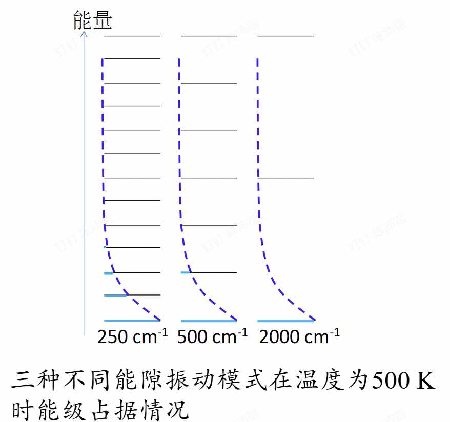
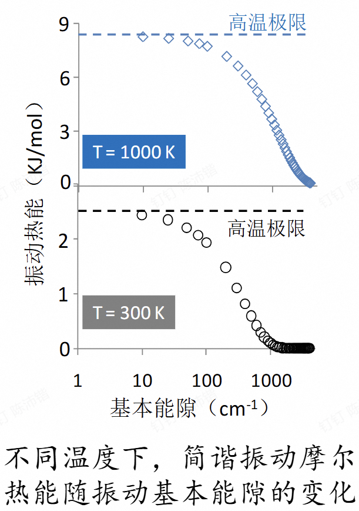
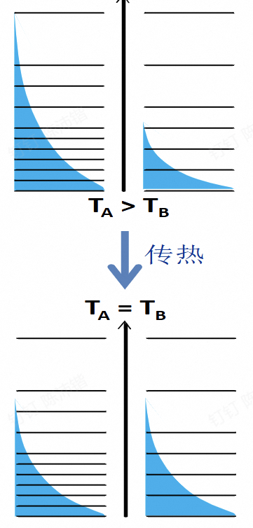
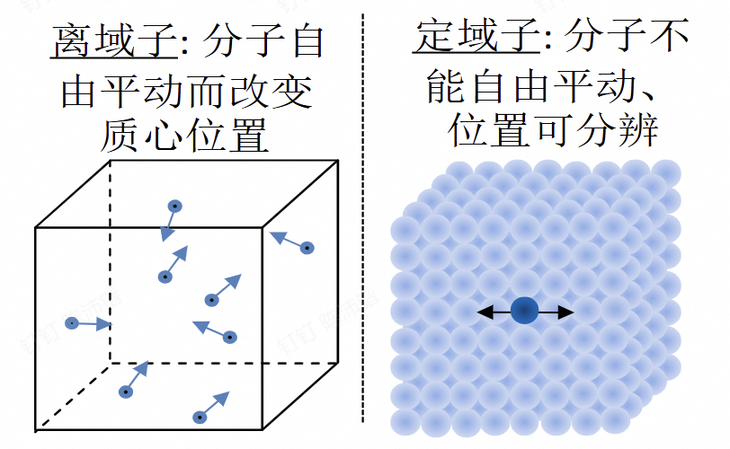

第三章 分子结构与宏观测量
第一节 不同自由度的的配分函数
1.1 正交自由度与配分函数
对任意自由度
\[f = \sum_{i=1}^{\infty} e^{-\frac{\varepsilon_i}{kT}}\]
波尔兹曼因子相当于是一个未归一化的权重。
如果在给定的能量类别中，第 \(i\) 个能级的简并度为 \(g_i\)
\[f = \sum_{i=1}^{n} g_i e^{-\frac{\varepsilon_i}{kT}}\]
多个正交自由度：
\[E = E_1 + E_2 + E_3 + \cdots + E_j\]
\[f = \prod_j f_j\]
Example
假定 \(\varepsilon^1\) 一共只有3个不同的量子能级，而 \(\varepsilon^2\) 有2个不同的量子能级。
解：记 \(\varepsilon^1\) 的3个量子能级为 \(\varepsilon_{11}, \varepsilon_{12}\) 和 \(\varepsilon_{13}\)，\(\varepsilon^2\) 的2个量子能级为 \(\varepsilon_{21}\) 和 \(\varepsilon_{22}\)，则根据配分函数的定义可知：
先求积结果：
\[f = \sum_{i=1}^{2 \times 3} e^{-\frac{\varepsilon_i}{kT}} = \sum_{i=1}^{6} e^{-\frac{\sum_{j=1}^{2}\varepsilon_{ij}}{kT}}\]
\[= \sum_{i=1}^{6} \prod_{j=1}^{2} e^{-\frac{\varepsilon_{ij}}{kT}} = e^{-\frac{\varepsilon_{11}}{kT}} \cdot e^{-\frac{\varepsilon_{21}}{kT}} + e^{-\frac{\varepsilon_{11}}{kT}} \cdot e^{-\frac{\varepsilon_{22}}{kT}} + e^{-\frac{\varepsilon_{12}}{kT}} \cdot e^{-\frac{\varepsilon_{21}}{kT}} + e^{-\frac{\varepsilon_{12}}{kT}} \cdot e^{-\frac{\varepsilon_{22}}{kT}} + e^{-\frac{\varepsilon_{13}}{kT}} \cdot e^{-\frac{\varepsilon_{21}}{kT}} + e^{-\frac{\varepsilon_{13}}{kT}} \cdot e^{-\frac{\varepsilon_{22}}{kT}}\]
先求和结果：
\[f = \prod_{j=1}^{2} f_j = \left(e^{-\frac{\varepsilon_{11}}{kT}} + e^{-\frac{\varepsilon_{12}}{kT}} + e^{-\frac{\varepsilon_{13}}{kT}}\right) \cdot \left(e^{-\frac{\varepsilon_{21}}{kT}} + e^{-\frac{\varepsilon_{22}}{2kT}}\right)\]
\[= e^{-\frac{\varepsilon_{11}}{kT}} \cdot e^{-\frac{\varepsilon_{21}}{kT}} + e^{-\frac{\varepsilon_{11}}{kT}} \cdot e^{-\frac{\varepsilon_{22}}{kT}} + e^{-\frac{\varepsilon_{12}}{kT}} \cdot e^{-\frac{\varepsilon_{21}}{kT}} + e^{-\frac{\varepsilon_{12}}{kT}} \cdot e^{-\frac{\varepsilon_{22}}{kT}} + e^{-\frac{\varepsilon_{13}}{kT}} \cdot e^{-\frac{\varepsilon_{21}}{kT}} + e^{-\frac{\varepsilon_{13}}{kT}} \cdot e^{-\frac{\varepsilon_{22}}{kT}}\]
两者是一致的，即合理。
总配分函数
\[f_{\text{总}} = f_{\text{电子}} f_{\text{振动}} f_{\text{转动}} f_{\text{平动}}\]
1.2 各自由度的配分函数
平动自由度
\[E_{n_x, n_y, n_z} = \frac{h^2}{8m}\left(\frac{n_x^2}{a^2} + \frac{n_y^2}{b^2} + \frac{n_z^2}{c^2}\right)\]
\[= E_{n_x} + E_{n_y} + E_{n_z}\]
\[f_{\text{平}} = f_x f_y f_z\]
由对称性计算\(f_x\)即可
\(f_x\)：
\[i = n_x = 1, 2, \dots\]
\[\varepsilon_i = \frac{h^2}{8ma^2}(i^2 - 1)\]
\[f_x = \sum_{i=1}^{\infty} e^{-\frac{h^2}{8ma^2}(i^2 - 1) / kT}\]
在通常的宏观条件下，由于平动能级间隔极小（ \(\varepsilon_i<<KT\) 近似连续）将求和转化为积分:
\[= \int_{1}^{\infty} e^{-\frac{h^2}{8ma^2}(i^2 - 1) / kT} \mathrm{d}i\]
\[f_x = \frac{(2\pi m)^{\frac{1}{2}}a}{h}(kT)^{\frac{1}{2}}\]
体积越大，能隙越小，现实中一般 \(a\) 都足够大
\[f_{\text{平}} = f_x f_y f_z = \frac{(2\pi m)^{\frac{3}{2}}}{h^3}(kT)^{\frac{3}{2}} V\]
Example
计算未饱和水蒸气（理想气体，温度为300 K，体积等于 \(1.0\text{ m}^3\)）的平动配分函数。
\[f_{\text{平动}} = \frac{(2\pi m)^{3/2}}{h^3}(kT)^{3/2}V = 7.4 \times 10^{31}\]
基态在配分函数中的取值及其对配分函数的贡献为
\[\frac{1}{7.4 \times 10^{31}} = 1.4 \times 10^{-32}\]
转动自由度
线性分子转动配分函数
\[\varepsilon_J = J(J+1) \frac{h^2}{8\pi^2 I}\]
\[f_{\text{转动}} = \sum_{J=0}^{\infty} (2J+1)e^{-\frac{J(J+1)h^2}{8\pi^2 I kT}} = \int_{0}^{\infty} (2J+1)e^{-\frac{J(J+1)h^2}{8\pi^2 I kT}} \mathrm{d}J\]
\[f_{\text{转动, 线性}} = \frac{8\pi^2 I}{h^2} kT = \frac{1}{hcB} kT\]
\[B = \frac{h}{8\pi^2 c I}\]
\[f_{\text{转动}} = -\frac{8\pi^2 I kT}{h^2} \int_{0}^{\infty} \mathrm{d}\left(e^{-\frac{J(J+1)h^2}{8\pi^2 I kT}}\right)\]
\[\mathrm{d}\left(e^{-\frac{J(J+1)h^2}{8\pi^2 I kT}}\right) = e^{-\frac{J(J+1)h^2}{8\pi^2 I kT}} \left(-\frac{h^2}{8\pi^2 I kT}\right) (2J+1) \mathrm{d}J\]
\[f_{\text{转动}} = -\frac{8\pi^2 I kT}{h^2} \int_{0}^{\infty} \mathrm{d}\left(e^{-\frac{J(J+1)h^2}{8\pi^2 I kT}}\right) = \frac{8\pi^2 I}{h^2} kT\]
Warning
这针对异核双原子分子。同核双原子如 \(N_2\) 需要额外除以对称数 \(\sigma=2\)。多原子非线性分子需用群论讨论对称性，如\(H_2O\)对称数为2.
\(\varepsilon_1 \ll kT\)。在“高温近似”条件下，转动能级间隔非常小，因此可以将离散的求和近似转化为连续的积分。
Note
平动极容易满足连续积分条件，而转动需要相对高温。通常特征转动温度 \(\Theta_r = \frac{h^2}{8\pi^2 Ik}\) 在几 \(K\) 到几十 \(K\) 之间。
Warning
在平动中沿 \(x, y, z\) 方向的动量算符（\(\hat{p}_x, \hat{p}_y, \hat{p}_z\)）相互对易。粒子可以同时具有确定的 \(x\)、\(y\) 和 \(z\) 方向量子数。总能量拆解为三个独立变量的函数：
\[E_{n_x, n_y, n_z} = E(n_x) + E(n_y) + E(n_z)\]
指数项 \(e^{-(E_x+E_y+E_z)/kT}\) 且三个量子数互相独立，求和能拆成三个求和的乘积。
在三维转动中,角动量算符三个方向分量（\(\hat{L}_x, \hat{L}_y, \hat{L}_z\)）不对易（ \([\hat{L}_x, \hat{L}_y] = i\hbar\hat{L}_z\)）。一个分子不可能同时在三个独立坐标轴上具有确定的转动量子数。无法写出形如 \(E = E(J_x) + E(J_y) + E(J_z)\) 的公式，因为 \(J_x, J_y, J_z\) 不能同时确定。
非线性分子：
\[f_{\text{转,非线性}} = \left(\frac{kT}{hc}\right)^{\frac{3}{2}} \left(\frac{\pi}{ABC}\right)^{\frac{1}{2}}\]
\(A, B, C\) 为三个主轴的转动常数
Example
光谱方法测得，CO的转动常数 \(B\) 为 \(1.93 \text{ cm}^{-1}\)。计算
（1）CO的基本能隙；
（2）该分子在 300 K 时的转动配分函数。
（1）CO的基本能隙求得如下：
\[\text{基本能隙} = \varepsilon_1 - \varepsilon_0 = 2\frac{h^2}{8\pi^2 I} - 0 = 2hcB = 0.48 \text{ (meV)}\]
（2）300 K 时的分子转动配分函数求得如下：
\[f_{\text{转动}} = \frac{1}{hcB} kT = 108\]
振动自由度
任意一个满足谐振近似的振动自由度：
Tip
简谐近似对于统计热力学（一般都在较低几个能级）近似效果较好。
\[E_v = \left(v + \frac{1}{2}\right)h\nu\]
\[i = v = 0, 1, 2, \dots\]
\[\varepsilon_i = i h \nu\]
\[f = \sum_{i=0}^{\infty} e^{-i\frac{h\nu}{kT}}\]
\(kT = 200 \text{ cm}^{-1}\)，与 \(KT\) 较为接近了，不能转化为连续积分。考虑为一个递减等比数列。
\[\therefore f = \frac{1}{1-x} = \frac{1}{1 - e^{-h\nu/kT}}\]
\[T \uparrow, f \uparrow, f \propto T\]
\[T \to \infty, f = \frac{kT}{h\nu}\]
\[T \to 0, f = 1\]
Tip
这里对含 \(e\) 指数项做泰勒展开得到结果。 \(T \to \infty\) 相当于做积分（黎曼和的定义）。
Abstract
\(f \propto T\) 与先前 \(f \propto \sqrt T\) 不同。
在高温（经典）近似下，微观粒子的能量表达式中，每一个独立的平方项，都会给配分函数贡献一个 \(T^{\frac{1}{2}}\) 的因子。平动只需动能储能（\(T^{\frac{1}{2}}\)/维），而振动必须同时依靠动能和势能交替储能，所以一维振动就达到了 \(T^1\) 的量级。后面将进行深入探究。
Example
红外光谱方法测得，水分子的三个振动模式的吸收波数分别为 \(3657 \text{ cm}^{-1}\)、 \(1595 \text{ cm}^{-1}\)、 \(3756 \text{ cm}^{-1}\)。计算水分子在 1000 K 时的分子振动配分函数。
注意：光谱学选律告诉我们，红外吸收的光子能量等于给定振动模式的基本能隙。
对于三个不同的振动模式，我们有，
红外吸收波数为 \(3657 \text{ cm}^{-1}\)， \(h\nu = 7.3 \times 10^{-20} \text{ (J)}\) ， \(f_{\text{振动}1} = 1.005\)
红外吸收波数为 \(1595 \text{ cm}^{-1}\)， \(h\nu = 3.2 \times 10^{-20} \text{ (J)}\) ， \(f_{\text{振动}2} = 1.112\)
红外吸收波数为 \(3756 \text{ cm}^{-1}\)， \(h\nu = 7.5 \times 10^{-20} \text{ (J)}\) ， \(f_{\text{振动}3} = 1.004\)$\(f_{\text{振动}} = \prod_{j=1}^{m} f_{\text{振动}j} = 1.005 \times 1.112 \times 1.004 = 1.1223\)$

配分函数即是蓝线加和。
电子自由度
一般而言，\(\Delta E \approx 1 \text{ eV}>> kT =0.025\text{ eV}\)
\[f_{\text{电子}} = \sum_{i=1}^{n} g_i e^{-\frac{\varepsilon_i}{kT}} = g_1 \cdot e^0 + g_2 \cdot e^{-\frac{\varepsilon_2}{kT}} + \dots \approx g_1\]
常温下分子的电子配分函数，严格等于它电子基态的简并度 \(g_1\)
Example
对于三线态氧气分子：
自旋角动量在空间中有 \(2S + 1\) 个允许的投影方向（磁量子数 \(M_S = +1, 0, -1\)）。这 \(2S + 1\) 种状态能量在没有外加磁场时简并。\(g_1 = 2S + 1 = 3 = f_{\text{电}}\)
对小电子能隙（如之前的二能级）
\[ f_{\text{电}} = 1 + e^{-\frac{\Delta E}{kT}}\]
第二节 封闭系统内能
2.1 基态能和内能
\[U = U(0) + Q\]
\[T \to 0, \quad U_{\min} = U(0) = N \cdot u_0\]
\[T \uparrow, \quad Q = \sum_{i=1}^{\infty} N_i \varepsilon_i\]
Tip
\(\varepsilon_i\) 表示相对基态的能量，故 \(i\) 从 \(1\) 开始
给定一个量子自由度 \(j\)（例如一个平动自由度）共有 \(n\) 个能级，分子在其第 \(i\) 个能级的分子数（\(N_{ij}\)）可用总的分子数目（\(N\)）和分子处于第 \(i\) 个能级的几率（\(P_{ij}\)）算得：
\[N_{ij} = N \times P_{ij}\]
则第 \(j\) 种运动形式所对应的能量
\[E_j = \sum_{i=1}^{\infty} \varepsilon_{ij} \cdot N_{ij} = \sum_{i=1}^{\infty} \varepsilon_{ij} \cdot N \frac{e^{-\frac{\varepsilon_{ij}}{kT}}}{f_j}\]
注意：\(E_j\) 是不包含基态能的第 \(j\) 种量子能级结构所对应的总能量。
\[\varepsilon_{ij} \cdot e^{-\frac{\varepsilon_{ij}}{kT}} = -\frac{\mathrm{d}(e^{-\frac{\varepsilon_{ij}}{kT}})}{\mathrm{d}(\frac{1}{kT})} = kT^2 \frac{\mathrm{d}(e^{-\frac{\varepsilon_{ij}}{kT}})}{\mathrm{d}T}\]
\[\downarrow\]
\[E_j = \sum_{i=1}^{\infty} \varepsilon_{ij} \cdot N \frac{e^{-\frac{\varepsilon_{ij}}{kT}}}{f_j} = \frac{N}{f_j} \sum_{i=1}^{\infty} \varepsilon_{ij} \cdot e^{-\frac{\varepsilon_{ij}}{kT}} = \frac{NkT^2}{f_j} \sum_{i=1}^{\infty} \frac{\mathrm{d}(e^{-\frac{\varepsilon_{ij}}{kT}})}{\mathrm{d}T}\]
\[\downarrow\]
\[E_j = \frac{NkT^2}{f_j} \frac{\mathrm{d}(\sum_{i=1}^{\infty} e^{-\frac{\varepsilon_{ij}}{kT}})}{\mathrm{d}T} = \frac{NkT^2}{f_j} \frac{\mathrm{d}f_j}{\mathrm{d}T}\]
\[\downarrow\]
\[E_j = NkT^2 \frac{\mathrm{d}(\ln f_j)}{\mathrm{d}T}\]
假设一个分子各个可能能级都处于基态时，其总能量为 \(u(0)\)，系统的基态能（\(U(0)\)）应等于总分子数与 \(u(0)\) 的乘积。
\[U(T) = \sum_{j=1}^{m} NkT^2 \frac{\mathrm{d}(\ln f_j)}{\mathrm{d}T} + Nu(0) = NkT^2 \frac{\mathrm{d}(\ln f_{\text{总}})}{\mathrm{d}T} + U(0)\]
热能（\(Q\)）
第 \(j\) 个量子自由度求得的热能
\[Q_j = U_j(T) - U_j(0) = NkT^2 \frac{\mathrm{d}(\ln f_j)}{\mathrm{d}T}\]
系统总热能
\[Q = U(T) - U(0) = NkT^2 \frac{\mathrm{d}(\ln f_{\text{总}})}{\mathrm{d}T}\]
2.2 不同类型量子自由度的热能
平动热能
对于理想气体，三个平动自由度的配分函数没有形式上的差别，用 \(x\) 方向的平动自由度为例
\[Q_x = NkT^2 \frac{\mathrm{d} \ln[(2\pi mkT)^{1/2}a/h]}{\mathrm{d}T} = \frac{1}{2}NkT = \frac{1}{2}nRT\]
每个平动方向的热能相等，与该方向的容器长度无关，每摩尔分子的每个平动自由度都对自由平动热能贡献 \(\frac{1}{2}RT\)
总热能
\[Q_{\text{平动}} = Q_x + Q_y + Q_z = \frac{3}{2}NkT = \frac{3}{2}nRT\]
转动热能
\[E_j = NkT^2 \frac{\mathrm{d}(\ln f_j)}{\mathrm{d}T}\]
在接近室温或者更高温度下（连续积分）
线性分子
\[f_{\text{转动, 线性}} = \frac{8\pi^2 I}{h^2} kT = \frac{1}{hcB} kT\]
\[Q_{\text{转动}} = NkT = nRT\]
非线性分子
\[f_{\text{转动, 非线性}} = \left(\frac{kT}{hc}\right)^{3/2} \left(\frac{\pi}{ABC}\right)^{1/2}\]
\[Q_{\text{转动}} = \frac{3}{2}NkT = \frac{3}{2}nRT\]
一摩尔分子的每一个转动自由度对热能的贡献等于 \(\frac{1}{2}RT\)
Question
为什么每个自由度的贡献都是\(\frac{1}{2}nRT\)？
能量均分定理只在被激发的自由度上适用
振动热能
\[f_{\text{振动}j} = \frac{1}{1 - e^{-\frac{h\nu_j}{kT}}}\]
\[Q_{\text{振动}j} = NkT^2 \frac{\mathrm{d}(\ln f_{\text{振动}j})}{\mathrm{d}T}\]
\[= NkT^2 \frac{\mathrm{d}[-\ln(1 - e^{-h\nu_j/kT})]}{\mathrm{d}T}\]
\[= \frac{Nh\nu_j e^{-h\nu_j/kT}}{1 - e^{-h\nu_j/kT}}\]
\[= \frac{Nh\nu_j}{e^{h\nu_j/kT} - 1}\]
低频高温近似
\[Q_{h\nu_j \ll kT} = \frac{Nh\nu_j}{1+h\nu_j/kT-1} = NkT = nRT\]
振动行为连续化，动能和势能两个平方项各自贡献 \(\frac{1}{2}nRT\)
高频低温近似
\[Q_{h\nu_j \gg kT} = \frac{Nh\nu_j}{\infty-1} = 0\]
一个分子系统的总振动热能，等于各个振动模式热能的加和
Example
分别计算在\(300\text{ K}\)时，\(1\text{ mol}\)水分子最高和最低两个振动模式（吸收波数分别为\(1595\text{ cm}^{-1}\)和\(3756\text{ cm}^{-1}\)）的热能。并将所得值与高温近似值（\(RT\)）进行比较。
对于红外吸收波数为\(1595\text{ cm}^{-1}\)的振动模式
\[h\nu_j = 3.2 \times 10^{-20} \text{ (J)}\]
\[Q_{\text{振动}j} = \frac{N h\nu_j}{e^{h\nu_j/kT} - 1} = 8.5 \times 10^{-3} \text{ (kJ/mol)}\]
对于红外吸收波数为\(3756\text{ cm}^{-1}\)的振动模式
* 基本能隙：
\[h\nu_j = 7.5 \times 10^{-20} \text{ (J)}\]
\[Q_{\text{振动}j} = \frac{N h\nu_j}{e^{h\nu_j/kT} - 1} = 6.1 \times 10^{-7} \text{ (kJ/mol)}\]
\[Q_{\text{振动}j} = RT = 2500 \text{ (J/mol)} = 2.5 \text{ (kJ/mol)}\]
水分子的这两种振动模式在\(300\text{ K}\)时都不能使用高温近似。频率越高，高温近似失效得越快。

电子热能
常温下\(RT=25meV\),电子能隙一般在几个\(eV\)（如氧气的单线态与三线态）,都处于基态。
室温下，常见分子的电子自由度对应的配分函数为常数，与温度无关。因此，配分函数对数对温度的导数等于零、其对应的热能为零。当温度特别高的时候，我们必须知道分子的电子能级结构，不同情况不同处理。
2.3 能量最低原理与能级准入标准
处于能量基态的几率就是一个自由度能量最低原理的正确率:
\[p_0 = \frac{g_0 e^{-\varepsilon_0 / kT}}{f}\]
“\(kT\)”和“\(RT\)”作为分子能级准入标度。
当能量用每分子为单位时，分子准入标度用kT；如果以每摩尔为单位，则用RT。
室温条件下，kT的值大约为\(25 meV\)，\(RT\)大约相当于\(2.5 kJ/mol\)。
2.4 热能与热
热能 \(Q\) 是状态函数，热 \(q\) 是热传导的“热流”。
微观看，“传热”是环境和系统之间通过交换热能而达成相同的玻尔兹曼分布的过程。

2.5 热力学第一定律
对于封闭系统，状态函数内能（\(U\)）的微小变化（全微分 \(\mathrm{d}\)）等于系统吸收的微小热量与环境对系统作的微小功（过程量，非全微分 \(\delta\)）之和：
\[\underbrace{\mathrm{d}U}_{\text{系统内能变化}} \xlongequal{\text{封闭系统}} \underbrace{\delta Q + \delta W}_\text{环境与系统的能量交换}\]
- \(\delta Q\)：传递微小热量的非全微分（过程量，与路径相关）。对于宏观过程，总热量：
$\(Q = \int_{\text{始态}}^{\text{终态}} \delta Q\)$
以体积功为例，外界对活塞的作用力为 \(F\)，活塞横截面积为 \(S\)，微小位移为 \(\mathrm{d}l\)：
\[F = P_{\text{外}} \cdot S\]
微小体积功：
\[\delta W = F \cdot \mathrm{d}l = P_{\text{外}} \cdot S \cdot \mathrm{d}l\]
由于系统微小体积变化 \(\mathrm{d}V = -S \cdot \mathrm{d}l\)（环境对系统压缩时 \(\mathrm{d}V < 0\)，正功），体积功：
\[\delta W = -P_{\text{外}} \mathrm{d}V\]
总功为该路径上的积分：
\[W = \int_{\text{始态}}^{\text{终态}} \delta W = \int_{V_1}^{V_2} -P_{\text{外}} \mathrm{d}V\]
2.6 定容过程的热量和定容热容
\[\delta q_V = \mathrm{d}U - \delta W = \mathrm{d}U + P_{\text{外}}\mathrm{d}V - \delta W_{\text{非}} = \mathrm{d}U\]
\[U = U(V,T,n)\]
一个宏观热力学系统，如果是均匀单相的纯态物质，其拥有的宏观自由度等于 3。
\[PV = nRT\]
- 尽可能选择在过程中为定值的状态函数作为独立变量。这会使得微分方程减少维度，甚至从偏微分方程转化为常微分方程。
- 选取具体问题最感兴趣的变量。
- 尽量选择常见的、易于观测的量。
在 \(n\) 不变的条件下：
\[\mathrm{d}U = \left(\frac{\partial U}{\partial V}\right)_T \mathrm{d}V + \left(\frac{\partial U}{\partial T}\right)_V \mathrm{d}T\]
\[\delta q_V = \mathrm{d}U = \left(\frac{\partial U}{\partial V}\right)_T \mathrm{d}V + \left(\frac{\partial U}{\partial T}\right)_V \mathrm{d}T = \left(\frac{\partial U}{\partial T}\right)_V \mathrm{d}T\]
定容热容：
\[C_V \equiv \left(\frac{\partial U}{\partial T}\right)_V\]
非机械功为零、物质摩尔量为常数条件下，定容热量的计算公式：
\[\delta q_V = C_V \mathrm{d}T\]
\[q_V = \int_{T_{\text{始}}}^{T_{\text{终}}} C_V \mathrm{d}T\]
\[C_V = \left(\frac{\partial U}{\partial T}\right)_V = \left(\frac{\partial Q}{\partial T}\right)_V = \left(\frac{\partial (Q_{\text{平动}} + Q_{\text{转动}} + Q_{\text{振动}} + Q_{\text{电子}})}{\partial T}\right)_V\]
平动：
\[C_{V\text{平动}} = \left(\frac{\partial(Q_{\text{平动}})}{\partial T}\right)_V = \left(\frac{\partial(\frac{3}{2}nRT)}{\partial T}\right)_V = \frac{3}{2}nR\]
转动：
单原子分子：
\[C_{V\text{转动}} = 0\]
线性分子：
\[C_{V\text{转动}} = \left(\frac{\partial(Q_{\text{转动}})}{\partial T}\right)_V = \left(\frac{\partial(nRT)}{\partial T}\right)_V = nR\]
非线性分子：
\[C_{V\text{转动}} = \left(\frac{\partial(Q_{\text{转动}})}{\partial T}\right)_V = \left(\frac{\partial(\frac{3}{2}nRT)}{\partial T}\right)_V = \frac{3}{2}nR\]
振动
\[C_{V\text{振动}} = \left(\frac{\partial(Q_{\text{振动}})}{\partial T}\right)_V = \frac{N(h\nu_j)^2}{kT^2} \frac{1}{\left(e^{h\nu_j/2kT} - e^{-h\nu_j/2kT}\right)^2}\]
\[Q_{\text{振动}j} = \frac{N h\nu_j}{e^{h\nu_j/kT} - 1}\]
一个分子可有不同振动模式，其振动等容热容需要把各个模式的贡献加起来。
电子运动
\[C_{V\text{电子}} = 0\]
总热容
\[C_V = C_{V\text{平动}} + C_{V\text{转动}} + C_{V\text{振动}} + C_{V\text{电子}}\]
|
\(\text{He}\) |
\(\text{O}_2\) |
\(\text{H}_2\text{O}\) |
| 高频低温 |
\(\frac{3}{2}nR\) |
\(\frac{5}{2}nR\) |
\(3nR\) |
| 低频高温 |
\(\frac{3}{2}nR\) |
\(\frac{7}{2}nR\) |
\(6nR\) |
\(n\) 不变的条件下，理想气体的内能 \(U=U(T)\)（无分子间势能影响内能）
\[\mathrm{d}U = \frac{\mathrm{d}U}{\mathrm{d}T}\mathrm{d}T = \left(\frac{\partial U}{\partial T}\right)_V \mathrm{d}T = C_V \mathrm{d}T\]
第三节 封闭系统的熵
3.1 从配分函数到系统熵
定域子系统和离域子系统：

气体（离域子）通过自由平动来自由改变各自的质心相对位置。晶体（定域子）无自由平动、只有振动，分子质心位置可分辨。
定域子系统的熵
\[S = k \ln W = k \ln \left( \prod_{j=1}^m W_j \right) = k \sum_{j=1}^m \ln \left( \frac{N!}{\prod_i N_{ij}!} \right)\]
Note
这里状态数计算逻辑：第j种运动模式各个能级分布粒子，全排列除以各个能级内部全排列即为总状态数。
引入斯特林近似：
\[S = k \sum_{j=1}^m \sum_i (N_{ij} \ln N - N_{ij} \ln N_{ij}) = -k \sum_{j=1}^m \sum_i \left( N_{ij} \ln \frac{e^{-\varepsilon_{ij}/kT}}{f_j} \right)\]
\[S = k \sum_{j=1}^m \sum_i \left( \frac{N_{ij} \varepsilon_{ij}}{kT} + N_{ij} \ln f_j \right) = k \sum_{j=1}^m \left( \frac{1}{kT} \sum_i N_{ij} \varepsilon_{ij} + \ln f_j \sum_i N_{ij} \right)\]
\(\sum_i N_{ij} \varepsilon_{ij}\)即总能量，代入\(Q_j = NkT^2 \frac{\mathrm{d} \ln f_j}{\mathrm{d}T}\)，总熵：
\[S_{\text{定域}} = \sum_{j=1}^m \left( \frac{Q_j}{T} + Nk \ln f_j \right) = Nk \left( T \frac{\mathrm{d}(\ln \prod_{j=1}^m f_j)}{\mathrm{d}T} + \ln \prod_{j=1}^m f_j \right) = Nk \frac{\mathrm{d}(T \ln f_{\text{总}})}{\mathrm{d}T}\]
\[S_{\text{定域}} = \frac{Q}{T} + Nk \ln f_{\text{总}}\]
某种运动形式熵
\[S_j = \frac{Q_j}{T} + Nk \ln f_j = Nk \frac{\mathrm{d}(T \ln f_j)}{\mathrm{d}T}\]
离域子系统的熵
当考虑离域子系统的总权重计算时，不能简单地把离域子系统总权重等同于各种权重乘积，而是要把各种权重的乘积除以\(N!\)才能得到系统的总权重。
\[S = k \ln W = k \ln \frac{\prod_{j=1}^m W_j}{N!} = k \left( \sum_{j=1}^m \ln \left( \frac{N!}{\prod_i N_{ij}!} \right) - \ln N! \right)\]
\[S_{\text{离域}} = \frac{Q}{T} + Nk \ln f_{\text{总}} - Nk \ln N + Nk = \frac{Q}{T} + Nk \ln \frac{e f_{\text{总}}}{N}\]
Tip
定域子系统每个粒子位置固定，相当于为这 \(N\) 个粒子的全排列（共有 \(N!\) 种方式）代表了 \(N!\) 个不同的微观状态。但这里它们是不可分辨的“全同粒子”，这 \(N!\) 种排列在物理上完全是同一种状态。
3.2 不同类型量子自由度的熵
平动熵
\[S_{\text{平动}} = \frac{Q_{\text{平动}}}{T} + Nk \ln \frac{e f_{\text{平动}}}{N} = \frac{5}{2}Nk + Nk \ln \frac{f_{\text{平动}}}{N}\]
Example
计算，\(300\text{ K}\)时，\(2\text{ mol}\)氩气（理想气体）从 \(1\text{ m}^3\) 收缩到 \(0.1\text{ m}^3\) 的熵变。以此判断该过程的自发可能性。
\[\Delta S = Nk \ln \frac{(2\pi mkT)^{3/2}V_{\text{终}}}{Nh^3} - Nk \ln \frac{(2\pi mkT)^{3/2}V_{\text{始}}}{Nh^3} = nR \ln \frac{V_{\text{终}}}{V_{\text{始}}}\]
\[\Delta S = nR \ln\left(\frac{V_{\text{终}}}{V_{\text{始}}}\right) = 2 \times 8.31 \times \ln(0.1) = -38.3 \text{ (J/K)}\]
在孤立系统中，气体分子自动收缩不是自发事件
转动熵
对于离域子，转动运动是一种实际存在的运动形式，而严格意义上的定域子（如晶体）不存在分子转动。但是，转动是分子绕质心的内部运动，其不存在空间位置重复计数的问题。因此，转动熵的计算应该从定域子公式出发。
线性分子
$\(S_{\text{转动}} = Nk + Nk \ln\left(\frac{kT}{hcB\alpha}\right) = Nk \ln\left(\frac{ekT}{hcB\alpha}\right)\)$
非线性分子
$\(S_{\text{转动}} = Nk \ln \left(\frac{\pi e^3 k^3 T^3}{ABCh^3c^3\alpha^2}\right)^{1/2}\)$
转动熵计算式要求比较高的温度，在较低温度下，需要用非连续方法算出相应的配分函数，进而算得转动熵。
Note
处理完平动以后，各个粒子相当于确定了坐标，故从定域子角度处理。\(N!\)的修正已经由平动承担了。
振动熵
振动熵的计算对于离域子和定域子没有区别。
\[S_{\text{振动}j} = \frac{Nkh\nu_j}{kT\left(e^{h\nu_j/kT} - 1\right)} + Nk \ln \frac{1}{1 - e^{-h\nu_j/kT}}\]
如果 \(h\nu_j \ll kT\)，给定振动自由度可做高温低频近似。
\[S_{\text{振动}j, \text{ 高温}} = Nk + Nk \ln \frac{kT}{h\nu_j} = Nk \ln \frac{ekT}{h\nu_j}\]
电子熵
通常温度下，电子运动的热能等于零，电子运动对应的熵取决于电子基态的简并度。如果简并度等于1，则熵等于零，否则，将是一个常数。
Example
在 \(298\text{ K}\) 时，二噁吩分子的两个噻吩环顺反异构体之间的能量差是 \(2510\text{ J/mol}\)。
（1）计算这个二能级系统的电子配分函数，（2）计算该二能级系统的摩尔电子热能，（3）计算该二能级系统的摩尔电子熵。
（1）电子配分函数：
\[f_{\text{电子}} = e^{-\frac{0}{RT}} + e^{-\frac{E}{RT}} = 1 + e^{-\frac{302}{T}} = 1.36\]
（2）摩尔电子热能：
\[Q_{\text{电子}} = NkT^2 \frac{\mathrm{d}(\ln f_{\text{电子}})}{\mathrm{d}T} = nR \frac{302}{1 + e^{302/T}} = 0.668 \text{ (kJ/mol)}\]
（3）摩尔电子熵：
\[S_{\text{电子}} = \frac{Q_{\text{电子}}}{T} + Nk \ln f_{\text{电子}} = \frac{668}{298} + R \ln 1.36 = 4.8 \text{ (J}\cdot\text{K}^{-1}\cdot\text{mol}^{-1}\text{)}\]
Example
1 mol 氧气分子（O2）理想气体，T = 300 K，V = 1.00 m3
* 键长 \(r_e = 1.2075\text{ \AA}\)
* 振动波数 \(\tilde{\nu} = 1580\text{ cm}^{-1}\)
* 电子基态 \(^3\Sigma_g^-\)，\(g_0 = 3\)
* 电子能隙 0.98 eV
求：配分函数、热能、定容热容、熵，并讨论各自由度贡献。
\[m = \frac{0.03200}{6.022 \times 10^{23}} = 5.314 \times 10^{-26}\text{ kg}\]
\[\mu = \frac{16.00 \times 16.00}{32.00} \times 1.6605 \times 10^{-27} = 1.3284 \times 10^{-26}\text{ kg}\]
\[I = \mu r_e^2 = 1.3284 \times 10^{-26} \times (1.2075 \times 10^{-10})^2 = 1.938 \times 10^{-46}\text{ kg}\cdot\text{m}^2\]
\[B = \frac{h}{8\pi^2 c I} = \frac{6.626 \times 10^{-34}}{8\pi^2 \times 2.998 \times 10^{10} \times 1.938 \times 10^{-46}} = 1.445\text{ cm}^{-1}\]
\[\frac{h\nu}{k} = \frac{hc\tilde{\nu}}{k} = 1.439 \times 1580 = 2272\text{ K}\]
- 配分函数计算
- 平动配分函数（离域子）：
\[f_{\text{平动}} = \frac{(2\pi mkT)^{3/2}}{h^3} V\]
\[2\pi mkT = 2\pi \times 5.314 \times 10^{-26} \times 1.381 \times 10^{-23} \times 300 = 1.382 \times 10^{-45}\]
\[h^3 = (6.626 \times 10^{-34})^3 = 2.91 \times 10^{-100}\]
\[f_{\text{平动}} = 1.77 \times 10^{32}\]
\[f_{\text{转动}} = \frac{kT}{\sigma hcB}, \quad \sigma = 2\]
\[\frac{kT}{hc} = \frac{300}{1.439} = 208.5\text{ cm}^{-1}\]
\[f_{\text{转动}} = \frac{208.5}{2 \times 1.445} = \frac{208.5}{2.890} = 72.1\]
\[x = \frac{h\nu}{kT} = \frac{2272}{300} = 7.57\]
\[f_{\text{振动}} = \frac{1}{1 - e^{-7.57}} = \frac{1}{1 - 0.00052} = 1.0005\]
\[e^{-\Delta E_1 / kT} = e^{-11360/300} = e^{-37.9} \approx 3.5 \times 10^{-17} \approx 0\]
\[f_{\text{电子}} = g_0 = 3\]
\[f_{\text{总}} = f_{\text{平动}} \cdot f_{\text{转动}} \cdot f_{\text{振动}} \cdot f_{\text{电子}} = (1.77 \times 10^{32}) \times 72.1 \times 1.0005 \times 3 = 3.83 \times 10^{34}\]
- 热能计算
- 平动热能：
\[Q_{\text{平动}} = \frac{3}{2}RT = 1.5 \times 8.314 \times 300 = 3741\text{ J/mol}\]
\[Q_{\text{转动}} = RT = 8.314 \times 300 = 2494\text{ J/mol}\]
\[Q_{\text{振动}} = \frac{R \cdot (h\nu/k)}{e^{h\nu/kT} - 1} = \frac{8.314 \times 2272}{e^{7.57} - 1} = 9.74\text{ J/mol}\]
\[Q_{\text{电子}} \approx 0\]
\[Q_{\text{总}} = 3741 + 2494 + 9.7 = 6245\text{ J/mol}\]
- 定容热容计算
- 平动热容：
\[C_{V,\text{平动}} = \frac{3}{2}R = 12.47\text{ J/(K}\cdot\text{mol)}\]
\[C_{V,\text{转动}} = R = 8.31\text{ J/(K}\cdot\text{mol)}\]
\[C_{V,\text{振动}} = R \cdot x^2 \cdot \frac{e^{-x}}{(1 - e^{-x})^2}, \quad x = 7.57\]
\[x^2 = 57.3, \quad e^{-x} = 0.00052, \quad (1 - e^{-x})^2 \approx 1\]
\[C_{V,\text{振动}} = 8.31 \times 57.3 \times 0.00052 = 0.247\text{ J/(K}\cdot\text{mol)}\]
\[C_{V,\text{电子}} \approx 0\]
$\(C_{V,\text{总}} = 12.47 + 8.31 + 0.25 = 21.03\text{ J/(K}\cdot\text{mol)}\)$ （实验值约 21.0 J/(K·mol)）
- 熵计算
- 平动熵：
\[S_{\text{平动}} = R \left[ \frac{5}{2} + \ln \left( \frac{(2\pi mkT)^{3/2}}{N_A h^3} \cdot \frac{V}{n} \right) \right]\]
当 V/n = 1.00 m3/mol 时，S_平动 = 182.9 J/(K·mol)
在 300 K, 1 bar 条件下，V/n = 0.0248 m3/mol，S_平动 = 152.1 J/(K·mol)
\[S_{\text{转动}} = R \left[ 1 + \ln \left( \frac{kT}{\sigma hcB} \right) \right] = R[1 + \ln f_{\text{转动}}] = 43.9\text{ J/(K}\cdot\text{mol)}\]
\[S_{\text{振动}} = R \left[ \frac{x}{e^x - 1} - \ln(1 - e^{-x}) \right] = 0.0368\text{ J/(K}\cdot\text{mol)}\]
\[S_{\text{电子}} = R \ln g_0 = 8.314 \times \ln 3 = 8.314 \times 1.099 = 9.14\text{ J/(K}\cdot\text{mol)}\]
$\(S_{\text{总}} = 152.1 + 43.9 + 0.04 + 9.14 = 205.2\text{ J/(K}\cdot\text{mol)}\)$ （实验值 205 J/(K·mol)）
各自由度贡献占比（300 K）
| 自由度 | 配分函数（数量级） | 热能 (J/mol) | 热容 (J/K·mol) | 熵 (J/K·mol) |
| :--- | :---: | :---: | :---: | :---: |
| 平动 | 10^32 | 3741 (60%) | 12.47 (59%) | 152 (74%) |
| 转动 | 10^2 | 2494 (40%) | 8.31 (40%) | 44 (21%) |
| 振动 | 1 | 10 (<1%) | 0.25 (1%) | 0.04 (<1%) |
| 电子 | 3 | 0 | 0 | 9 (4%) |
| 总计 | 10^34 | 6245 | 21.03 | 205 |
- 平动主导配分函数、热能和熵，因能级极密。
- 转动贡献次之，与平动共同决定 \(C_V \approx 2.5R\) 的实验事实。
- 振动在 300 K 时几乎“冻结”，但对热容有微小贡献。
- 电子基态简并度 3，贡献 9 J/(K·mol) 的熵，不可忽略；但热容为零。